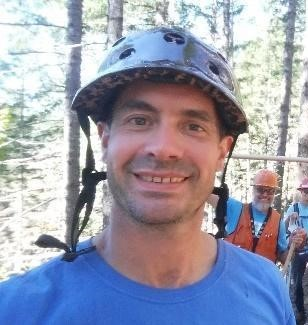
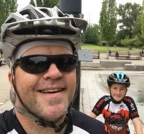

About TeamDirt
Who we are?
Team Dirt is a mountain bike club and chapter of the IMBA. It was originally founded as a bike racing team in the Corvallis Oregon area. Since that time, it has grown into an organization advocating for all biking activity in the Benton County area. Team Dirt supports urban (Pump Track, BMX bike park, bike paths, and community events), as well as, traditional off road riding (XC, All Mountain, and DH/Gravity).
Team Dirt is a 501(c)(3) non-profit community organization. The club is open to all riders, regardless of riding or building skill. Team Dirt is primarily focused on building and maintaining sustainable trails, suitable for mountain bikers, but often open for multi-purpose use. The club hosts many trail build events throughout the year, in addition too, shared build events with local IMBA chapters. Fundraising is performed via sponsorship, member donations, and a few shuttle days every year at Alsea Falls.
Contact Information
| Name | Position | Description | ||
|---|---|---|---|---|
| Jenna Berman | Chair | Jenna is the Team Dirt Chair. She moved back to Oregon in 2016 after 10 years in Colorado where she worked for Bicycle Colorado doing state-level bicycle advocacy and education. | jfunkberman@gmail.com | 
|
| Wayne Clark | Board Member | Wayne is the former Chair and Vice Chair. He lends a wealth of knowledge from experience with other boards and specifically advises Team Dirt on insurance matters. | clarkwayne@hotmail.com | |
| Daniel Coyle | McDonald / Starker Region Coordinator | Dan oversees trailbuilding in the local McDonald and Starker forests. Dan does it all - planning/designing trails, training volunteers and even organizing mountain bike camps for youth. Dan is a 25 year resident of Corvallis. | danielcoyle@hotmail.com |  |
| Rajesh (Raj) Injety | Social Ride Coordinator | Raj is the Team Dirt social ride coordinator, striving for seasonal community rides that span all ranges of abilities. With many years of experience as a bike mechanic at Bike N' Hike, he brings bike industry experience. | rajeshinjety@gmail.com | |
| Trey Jackson | Secretary / OSU Liaison | Trey keeps the board meetings moving along as Secretary - keeping the group on track, taking care of all the administrative details, and providing key technical support for Team Dirt. In his free time, he rides his bikes until they break. | trey.jackson@teamdirt.org |  |
| Keith Leavitt | Social Chair | Keith is Team Dirt’s “cruise director”. He plans extra-curricular and off-the-bike social events, building community, and boosting cohesiveness and stoke in the Corvallis-area mountain bike community. | keith.leavitt@oregonstate.edu | |
| Ben Leland | Treasurer | Ben is Team Dirt's Treasurer, helping to manage funds for trailbuild projects, fundraising efforts, and donations. In his free time, he loves to get out in the woods and make rad trails! | treasurer@teamdirt.org | |
| Aaron Turner | Alsea Falls Region Coordinator | Aaron is the Alsea Falls Region Coordinator as of Fall 2021. He helps to facilitate build days, shuttle events, and works directly with partners to foster the maintenance and growth of trails in the area. Aaron enjoys building community and keeping the momentum of the Team Dirt mission moving forward. | aaronturnerco@gmail.com | |
| Jenny Wu | Vice Chair | Jenny is the current Vice Chair and the former Treasurer. She is currently focused on website and membership activities and has been riding socially in Corvallis for over 19 years. | jwu55@comcast.net |
Mailing Address
TEAM DIRT, A CHAPTER OF IMBA
922 NW Circle Blvd Ste 160 PMB 242
Corvallis, Oregon 97330-1483
Tax ID (EIN#)
45-5199840
Becoming a Sponsor
If you would like to help support Team Dirt and the local Mountain Biking community, please contact our Treasurer Ben Leland.